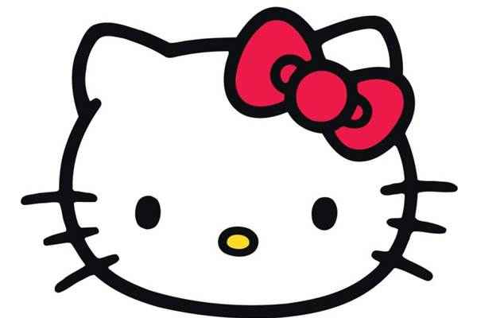

A hello kitty é uma gatinha de desenho animado criado em 1974, o desenho é sobre a gatinha e seus amigos, porém há uma lenda sobre ela.
a lenda seria sobre a boca, pois a hello kitty não tem uma boca
como podemos ver, a hello kitty é uma gatinha muito fofa, porém sem uma boca, e agora irei contar sobre sua lenda.
segundo a lenda uma garota de 14 anos desenvolveu câncer na boca e estava em fase terminal, sua mãe tentava de tudo para curar a filha, e sua ultima alternativa foi fazer um pacto com o diabo, em troca a mãe deveria fazer com que a marca "hello kitty" ficasse famosa no mundo todo